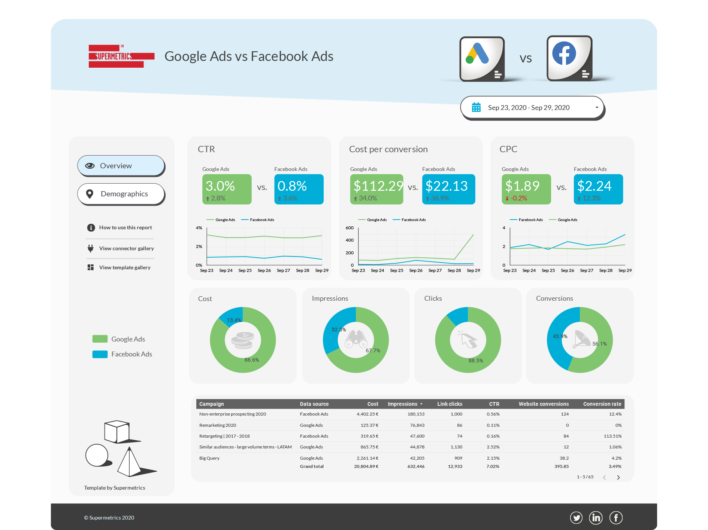

The process of data analysis comes to a close with this stage. The information is presented to the public in this step using the findings of the analysis in a way that the average person can readily understand it.
Data visualization is the approach that is used the most frequently for this. Data visualization is the process of putting information from data into a visual context so that the human brain may more easily interpret it and draw conclusions from it. The final phase in the data analysis process is for the analyst to share their insights with the relevant parties when they have finished their studies and come to their conclusions. Being more challenging than merely disclosing work outcomes, it also addresses how to clearly interpret and present the results. It is crucial to ensure that the insights have clarity and are explicit. Owing to this, data analysts generally adopt reports, dashboards, and interactive visualizations for supplementing their discoveries.
An example of result presentation using a dashboard is shown below which is an analytics dashboard analyzing the customers of a sample company.
Another example of dashboards is seen in figure 2.3 which shows the results gotten from an analysis of data concerning Google Ads and Facebook Ads for the period 23rd Sept 2020 – 29th Sept 2020.
